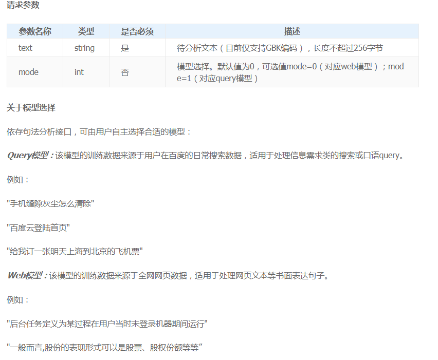
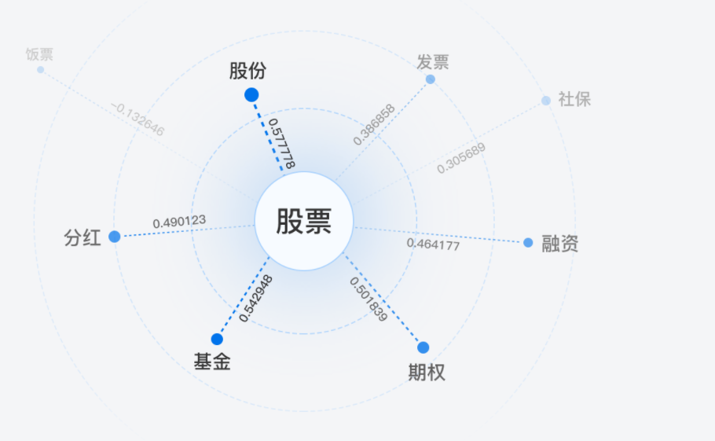

自然语言处理
1、词法分析
概念：
基于大数据和用户行为的分词、词性标注、命名实体识别，定位基本语言元素，消除歧义，支撑自然语言的准确理解。
功能介绍：
body使用示例：
{
“text”: “百度是一家高科技公司”
}
返回参数：
返回示例：
词性说明：
2、依存句法分析
概念：
利用句子中词与词之间的依存关系来表示词语的句法结构信息(如主谓、动宾、定中等结构关系)
并用树状结构来表示整句的的结构(如主谓宾、定状补等)
功能介绍：
body请求示例：
{
“text”: “今天天气怎么样”,
“mode”: 1
}
参数与模式：

返回参数：
返回示例：
词性取值与依存关系详见网址：
http://ai.baidu.com/docs#/NLP-API/top
3、DNN语言模型
概念：
语言模型是通过计算给定词组成的句子的概率，从而判断所组成的句子是否符合客观语言表达习惯
通常用于机器翻译、拼写纠错、语音识别、问答系统、词性标注、句法分析和信息检索等
功能：
body请求示例：
{
“text”:”床前明月光”
}
返回参数：
返回示例：
4、词义相似度接口
概念:
本技术用于计算两个给定词语的语义相似度，基于自然语言中的分布假设，即越是经常共同出现的词之间的相似度越高。词义相似度是自然语言处理中的重要基础技术，是专名挖掘、query改写、词性标注等常用技术的基础之一
功能：

body请求示例：
返回说明：

5、短文本相似度
概念：
短文本相似度计算服务能够提供不同短文本之间相似度的计算，输出的相似度是一个介于-1到1之间的实数值，越大则相似度越高。这个相似度值可以直接用于结果排序，也可以作为一维基础特征作用于更复杂的系统
功能：
body请求：
关于模型的选择：
返回说明：
6、评论观点抽取
概念：
自动分析评论关注点和评论观点，并输出评论观点标签及评论观点极性。目前支持13类产品用户评论的观点抽取，包括美食、酒店、汽车、景点等，可帮助商家进行产品分析，辅助用户进行消费决策
功能：